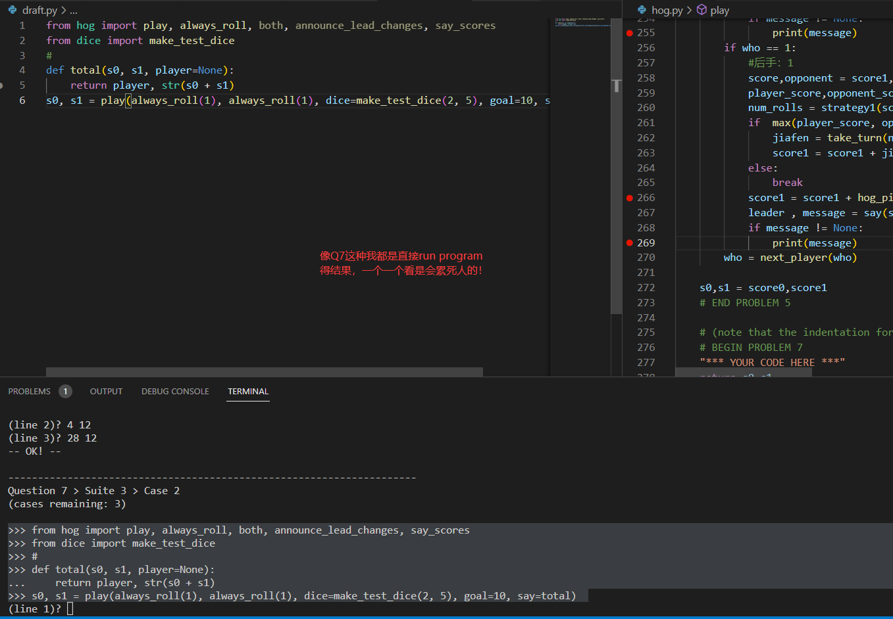
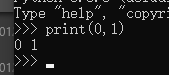
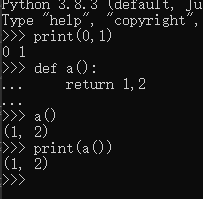
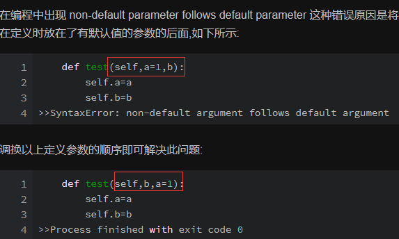
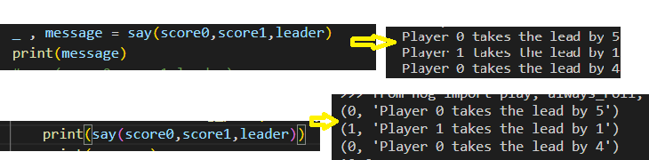
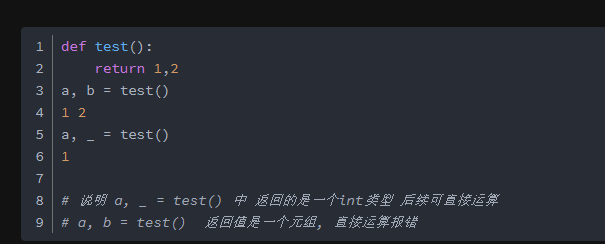
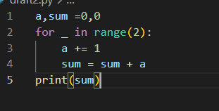
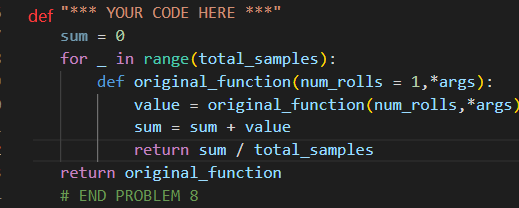

xxx
- 做project心得
- 不要跟着 python ok qx -u 走，会搞死你，根本无法理解
- 多用 python ok qx 这样就好了,会给期望，让你知道差别在哪里
- 这个题目根本不是人能够读懂的，操
- 用一个draft.py用import去写，就不用在源文件里面到处写DEBUG了
链接
一些语句，看了知道，不看死想也想不到
自动有空格在中间，如果是数字而不当成tuple
只有print数字是这样，return都不行无默认值的在前面。
输出有()的是tuple，是元组！
_可以return多个值取其中一个值
可以调出值来，在里面参与循环
额 这样好像也可以
